Titans are mysterious giant humanoid creatures that play a central role in the world of Attack on Titan. For centuries, humanity believed that these beings were the greatest threat to its survival, as they preyed on humans and possessed extraordinary physical abilities. Their existence is closely connected to the Subjects of Ymir and the history of the Eldian people. Although most Titans appear to act instinctively, their origins and true nature are far more complex than humanity initially understood. Titans can be divided into different categories, including Pure Titans and Titan Shifters. Among the latter are nine unique powers known collectively as the Nine Titans.
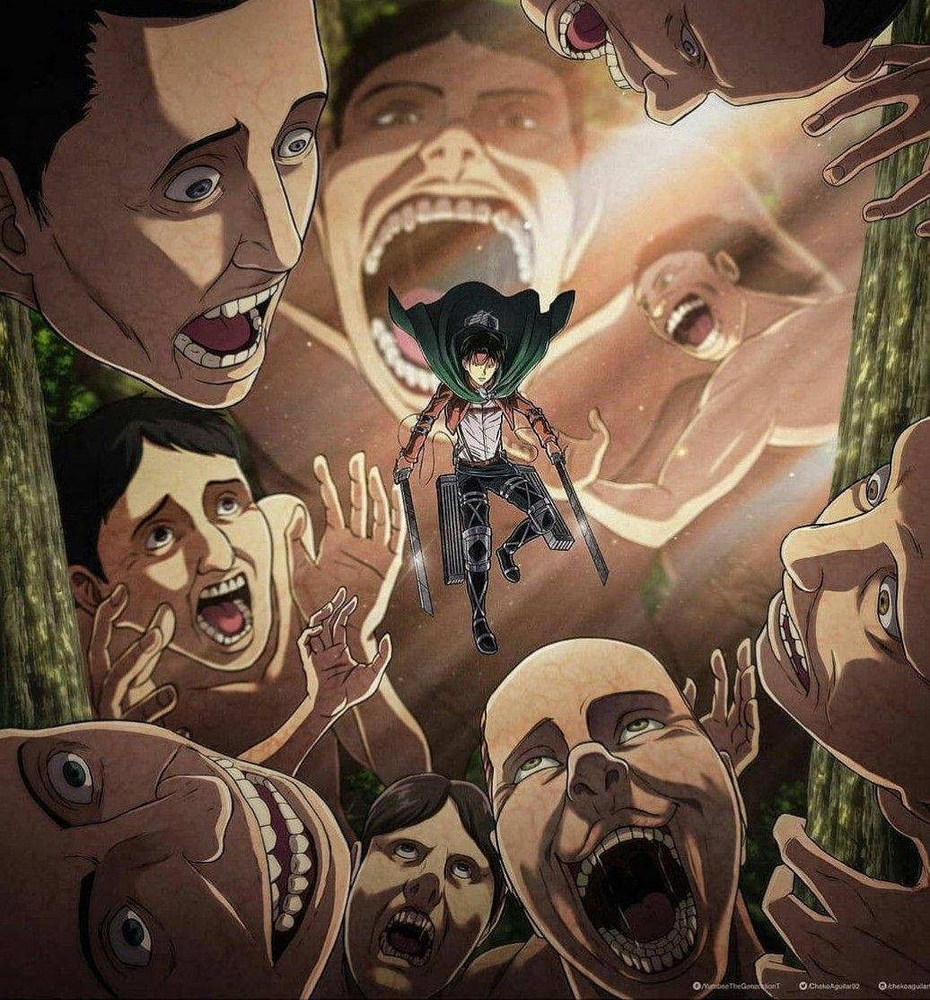
Pure Titans are the most common type of Titan. They are created when Subjects of Ymir are transformed into Titans and generally act according to instinct, seeking out humans without the ability to return to their original human form on their own.
Their appearances and sizes vary considerably, and their behavior is often unpredictable. Despite their seemingly simple nature, they possess remarkable strength and regenerative abilities.
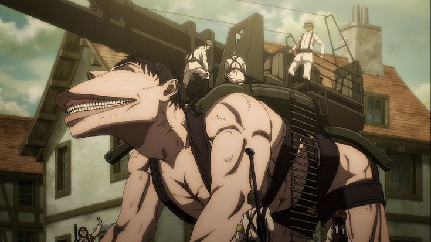
Titan Shifters are individuals who possess the ability to transform into intelligent Titans while retaining their human consciousness and personality.
Unlike Pure Titans, they can control their transformations and use their Titan forms in combat. There are nine distinct Titan powers, each with unique characteristics and abilities.
The Nine Titans are nine unique powers passed down through the Subjects of Ymir. Each possesses different abilities and physical characteristics, making them distinct from ordinary Titans.
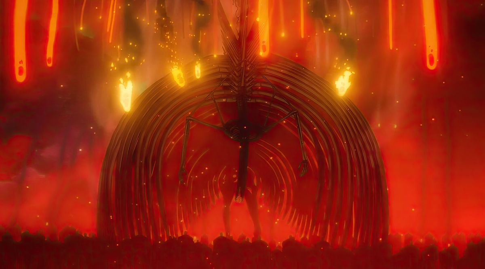
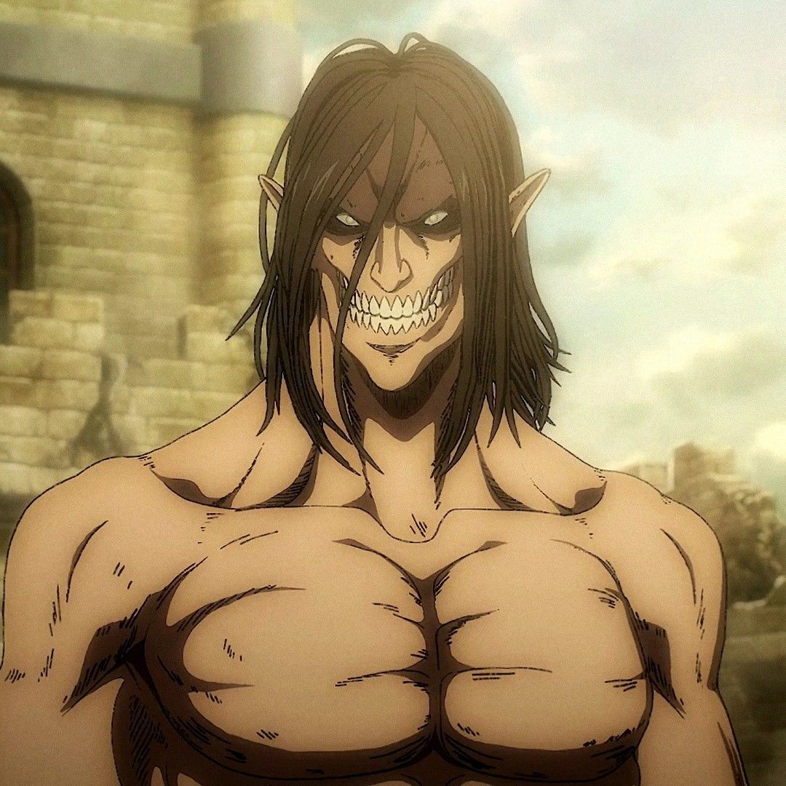
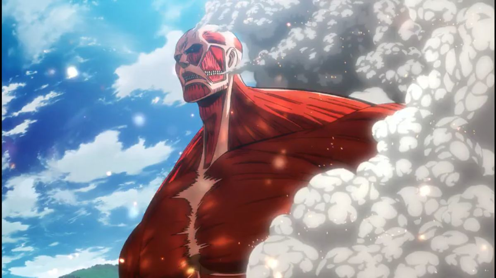
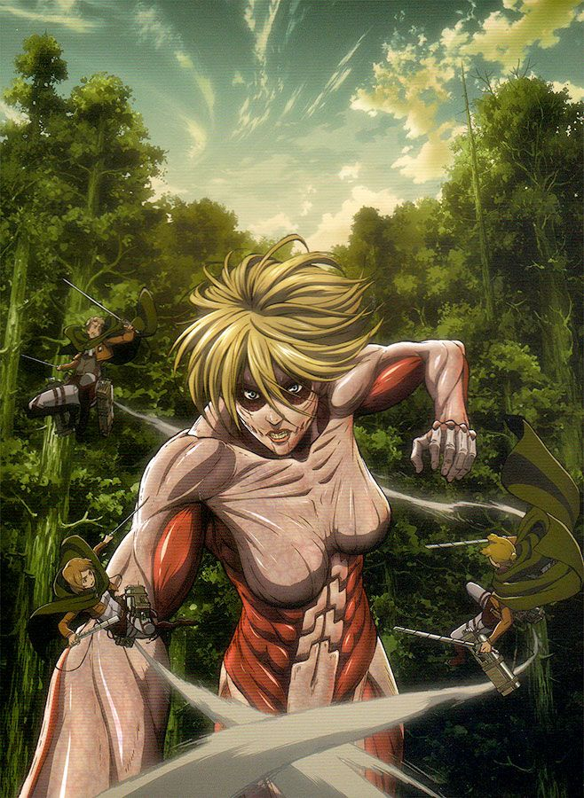
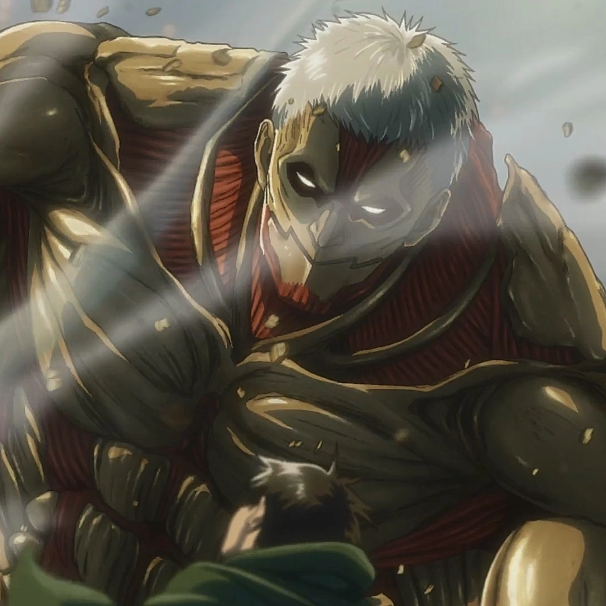
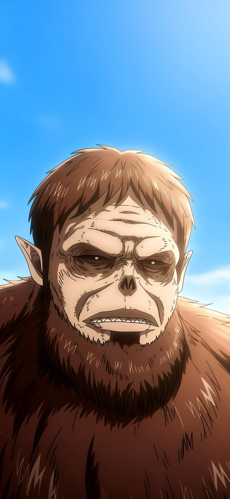
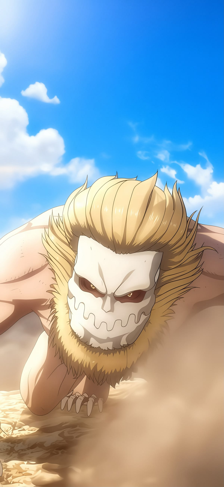
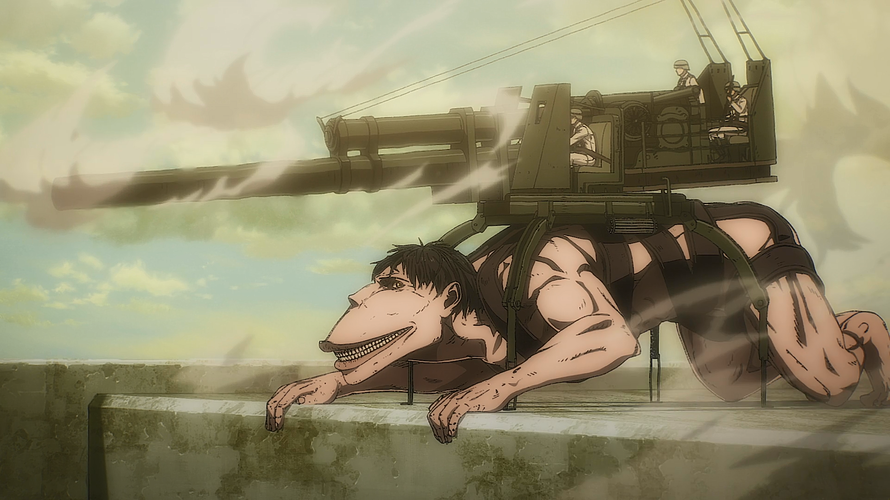
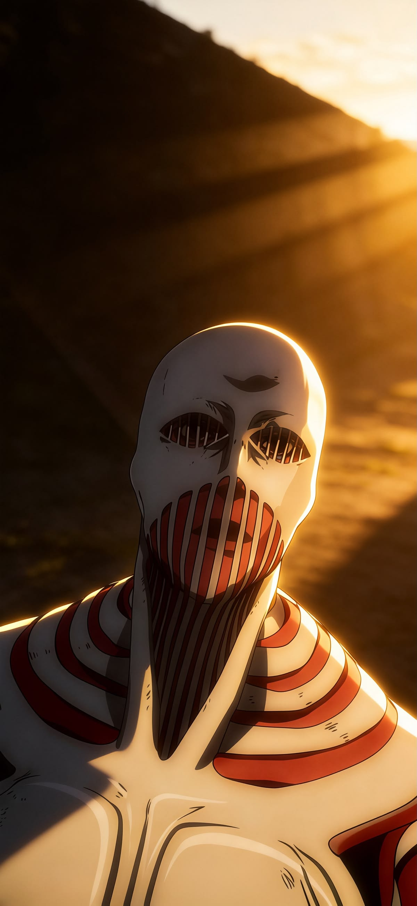
Titans possess extraordinary regenerative abilities, allowing them to recover from many types of injuries.
The nape of a Titan's neck is its primary weak point. Damaging this area is generally the most effective way to eliminate one.
Certain individuals can transform into Titans through specific conditions, taking on a giant humanoid form.
Despite their enormous size, Titans have unusual biological characteristics, including high body temperatures and little need for conventional nutrition.